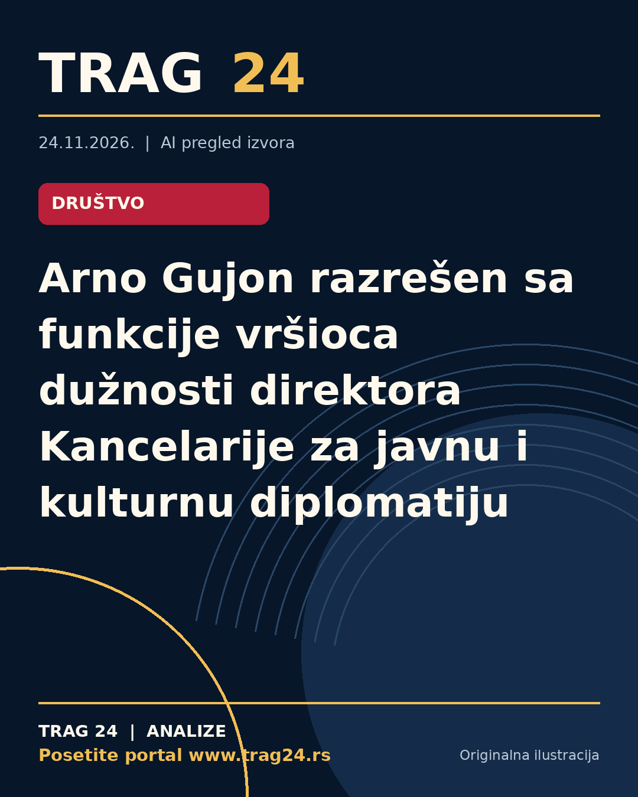

Arno Gujon razrešen sa funkcije vršioca dužnosti direktora Kancelarije za javnu i kulturnu diplomatiju

ŠTA SE DOGODILO
Arno Gujon razrešen je sa funkcije vršioca dužnosti direktora Kancelarije za javnu i kulturnu diplomatiju. Odluka o njegovom razrešenju doneta je odlukom Vlade Srbije u tehničkom mandatu i objavljena u Službenom glasniku. Razlog za razrešenje je prelazak na drugu dužnost, a odluku je potpisao predsednik Vlade u tehničkom mandatu, prof. dr Đuro Macut.
HRONOLOGIJA
Gujon je do razrešenja obavljao funkciju vršioca dužnosti direktora Kancelarije za javnu i kulturnu diplomatiju. Odluka o njegovom razrešenju donesena je sa datumom od 17. novembra 2026. godine. U prethodnom periodu Gujon je u Moskvi razgovarao o saradnji Srbije i Rusije u oblasti kulture, obrazovanja i javne diplomatije, a isticao je značaj istorijskih ličnosti kao što je grof Sava Vladislavić za veze između Srbije i Rusije.
ŠTA NAVODE IZVORI
Kurir, Euronews Srbija i B92 prenose da je Gujon razrešen zbog prelaska na drugu dužnost, navodeći isto obrazloženje koje je sadržano u odluci Vlade Srbije. Euronews Srbija dodatno ističe njegove izjave o značaju potrebne vizije i političke hrabrosti za poziciju koju je obavljao. Nema detalja o novoj dužnosti na koju je prešao. Ostale teme u člancima nisu direktno povezane sa ovom odlukom i odnose se na različite aktuelne događaje u Srbiji i svetu.
ŠTA JE POTVRĐENO
Potvrđeno je da je Vlada Srbije donela rešenje o razrešenju Arna Gujona sa funkcije vršioca dužnosti direktora Kancelarije za javnu i kulturnu diplomatiju. Razrešenje je objavljeno u Službenom glasniku sa datumom 17. novembra 2026. godine, kao i razlog prelaska na drugu dužnost. Potpisnik odluke je predsednik Vlade Srbije u tehničkom mandatu.
ŠTA NIJE POTVRĐENO
Nije potvrđeno na koju dužnost je Arno Gujon prešao nakon razrešenja sa sadašnje pozicije. Takođe, nisu dostupne informacije o imenovanju njegovog naslednika niti o razlozima prelaska na drugu dužnost izvan onoga što je navedeno u odluci.
ŠTA OSTАJE OTVORENO: Ostaje nejasno koja će osoba preuzeti funkciju direktora Kancelarije za javnu i kulturnu diplomatiju i koje su konkretne aktivnosti ili planovi povezani sa personalnim promenama u ovoj instituciji. Takođe, nije dostupna zvanična informacija o novoj ulozi Arna Gujona u državnim ili drugim institucijama.
Izvori
- https://www.kurir.rs/vesti/politika/10170890/gujon-razresen-sa-funkcije-v-d-direktora-kancelarije-za-javnu-i-kulturnu-diplomatiju
- https://www.euronews.rs/srbija/politika/253384/arno-gujon-razresen-zbog-prelaska-na-drugu-duznost/vest
- https://www.b92.net/info/politika/287577/gujon-razresen-sa-funkcije-vd-direktora-kancelarije-za-javnu-i-kulturnu-diplomatiju/vest
Ova analiza je pripremljena uz pomoć veštačke inteligencije na osnovu javno dostupnih izvora. Navodi izvora nisu nužno nezavisno potvrđeni.